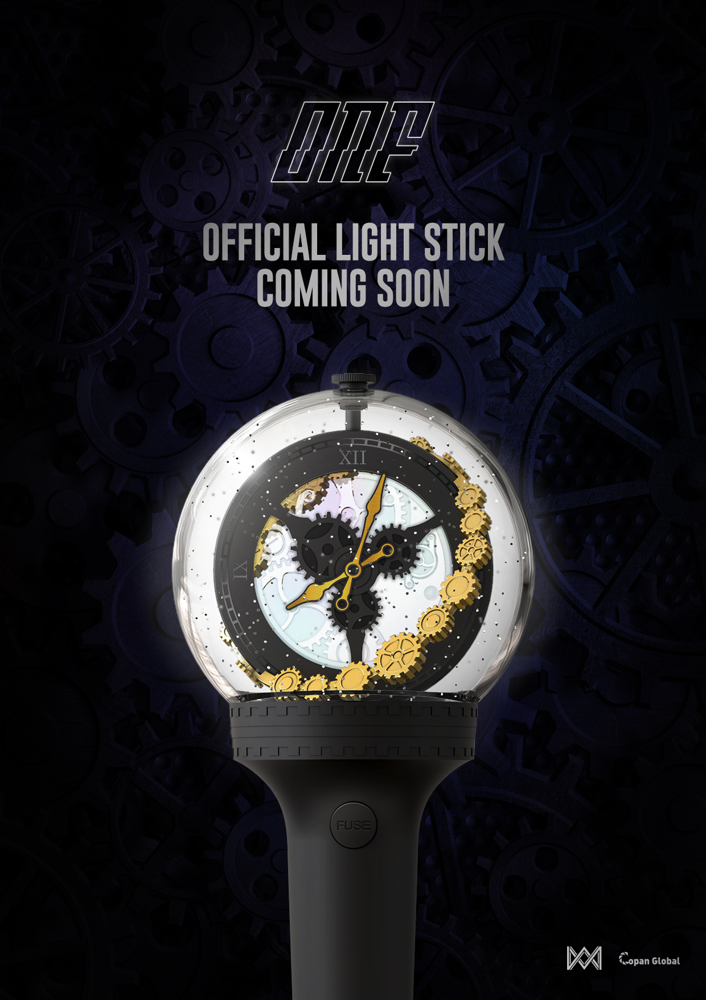

ONF
ONF為WM Entertainment旗下男子團體。
2017年8月2日發行首張迷你專輯《ON/OFF》，隔日(8/3)於M!Countdown正式出道。
團名ONF意指在舞台上能展現有帥氣有魅力的舞蹈，在舞台下則有像親弟弟、親哥哥、朋友這樣的自然感的反轉魅力，在舞台上是ON，在舞台下是OFF。
另一方面，ONF可分成ON及OFF兩個小分隊。
ON隊具有明朗的形象及感性Vocal的能力，OFF隊擁有充滿魅力的形象及華麗舞蹈的能力。
FUSE
2018.06.04 公開粉絲名。
ONF + MUSE = FUSE，是唯一能使得ONF完整的存在。
有著不能沒有彼此，要成為彼此之間堅強的後盾、守護並給予對方力量的涵義。

LIGHT STICK
ONF官方應援棒 (OFFICIAL LIGHT STICK)
ONF & FUSE !
穿越時空的時間點, 還有 8點 3分...
FUSE的尖叫聲隨著燈光一起發亮, 停止的齒輪開始轉動了